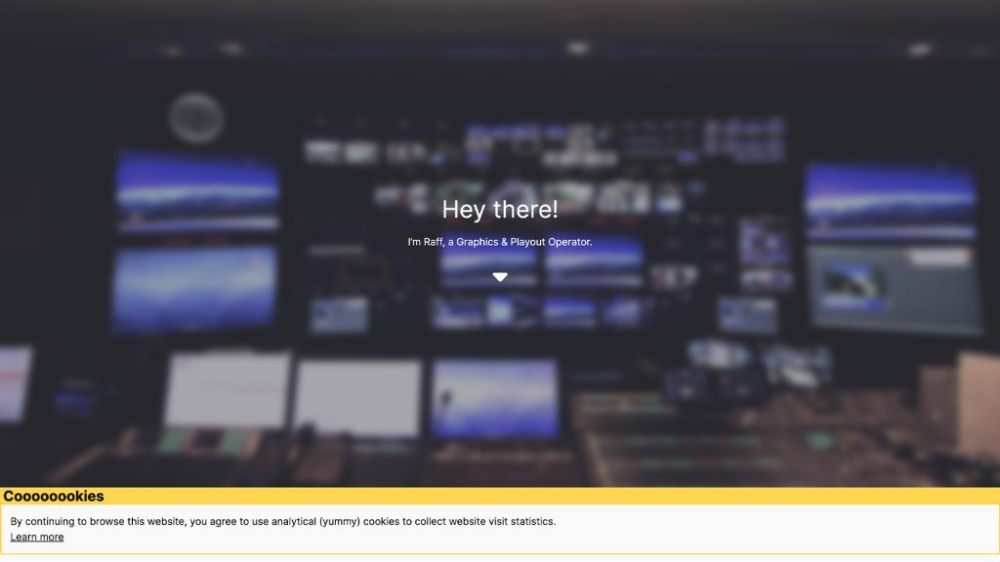
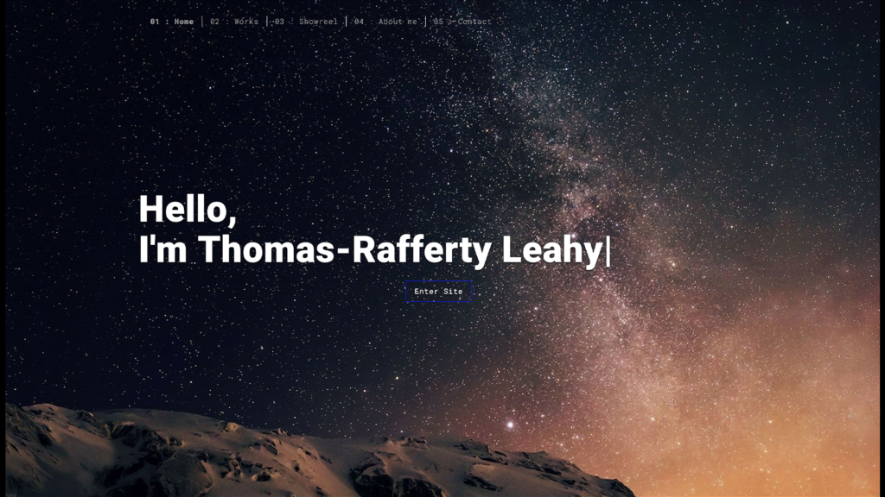

Personal Portfolio V3
The third iteration of my personal portfolio. A new chapter, preserved here.
Visit archive 01 / 03
Old sites.
Still part of the story.
A home for the websites that came before.
Different designs, different ideas. All kept here
to look back on.

The third iteration of my personal portfolio. A new chapter, preserved here.
A second take on the personal portfolio, one month after the first.

The first version in this collection. The starting point for what came next.
Websites change. This is a small record of mine: past portfolios, earlier ideas, and the steps between them. Each site is preserved as it was archived, quirks and all.
Explore the collection